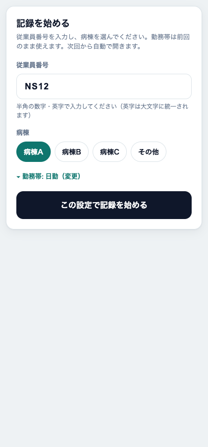
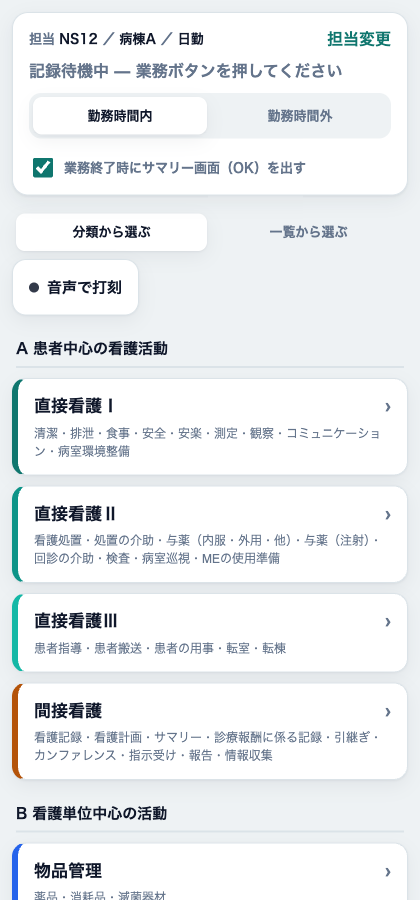
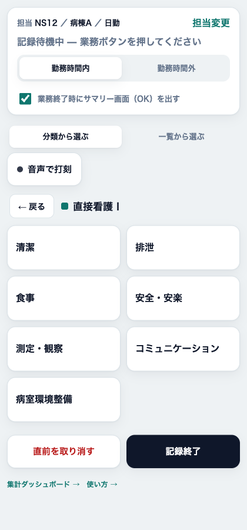
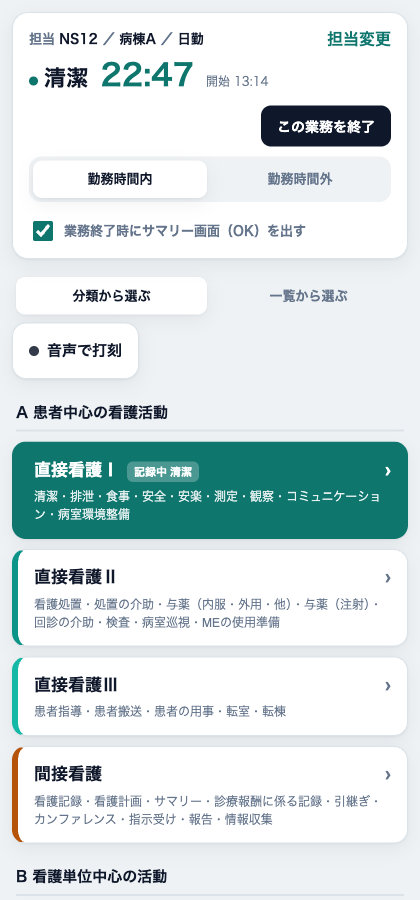
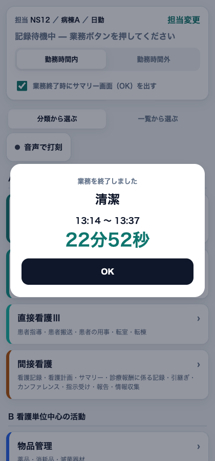
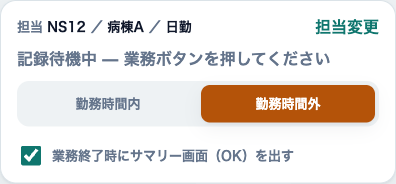
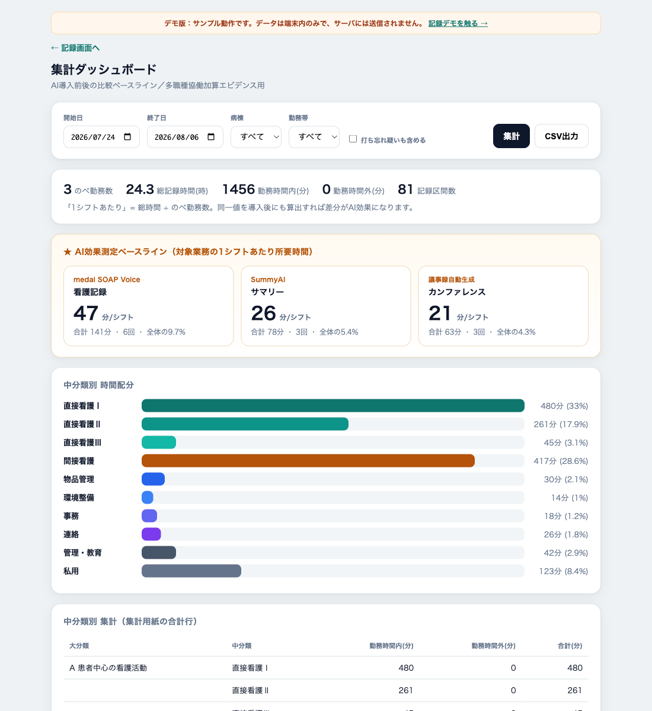
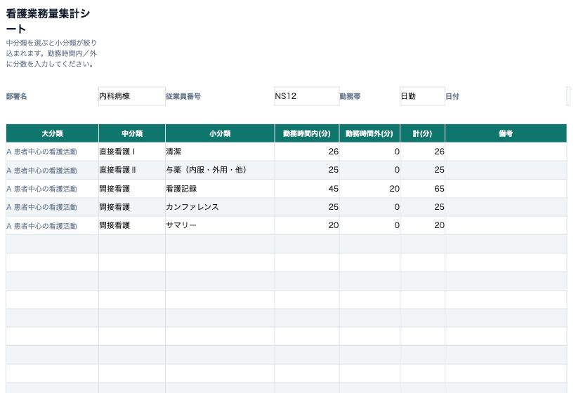
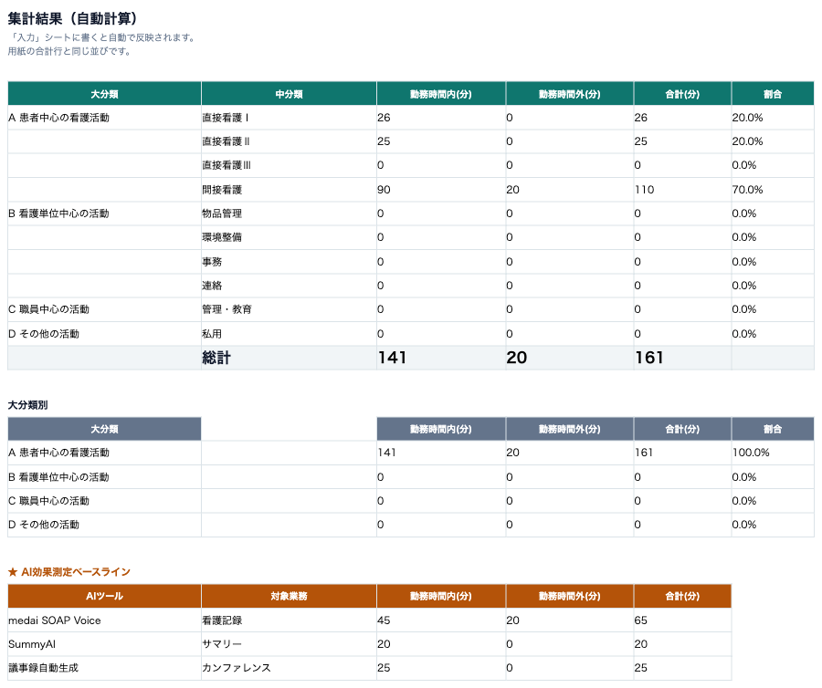

「今やっている業務」のボタンを1タップするだけで、業務ごとの所要時間が自動で記録・集計されます。記録するのは業務区分と時刻だけで、患者情報は一切扱いません。
目的は2つ ─ ①AI導入前後の業務時間の比較（ベースライン測定）、②多職種協働加算のエビデンス（他職種へ移せる業務時間の可視化）。
記録方式は打刻式です。業務が変わるたびに、今から始める業務のボタンを押します。次のボタンを押すまでの時間が、その業務の所要時間になります。ストップウォッチを都度止める必要はありません。
ブラウザで http://（サーバのIP）:8301/ を開きます。ホーム画面に追加すると、アプリのように全画面で使えます。
はじめに従業員番号を入力します。半角の数字・英字が使えます（英字は自動で大文字になります）。続いて病棟を選びます。
勤務帯は前回のまま使えます。変えるときは「勤務帯を変更」を開きます。一度設定すると次回からは自動でこの画面を飛ばして記録画面が開きます。

記録画面には、業務の大きなまとまり（中分類）がカードで並びます。カードには中身の業務が書いてあるので、開かなくても何が入っているか分かります。
今からやる業務が含まれるカードをタップします。

カードを開くと、その中の小分類だけが表示されます。今からやる業務のボタンを押すと、その瞬間から時間の計測が始まります。
別の中分類に切り替えたいときは「← 戻る」で一覧に戻ります。

記録が始まると画面の上部に、今の業務名と経過時間（タイマー）が出ます。記録中の中分類カードは色が付き「記録中 ○○」と表示されるので、一覧に戻っても今なにを記録中か分かります。
業務の終わり方は2通りです。

業務を終了すると、その業務の名称・開始と終了の時刻・所要時間が表示されます。内容を確認して「OK」を押すと閉じます。
押し間違えたときは、記録画面の「直前を取り消す」で直前の打刻を1つ取り消せます。

手が塞がっているとき用です。ボタンでの記録と同じことを、話すだけでできます。
記録画面の「🎤 音声で打刻」を押すと聞き取りが始まります。業務名をそのまま言ってください（例：「清潔」「与薬」「カンファレンス」）。
聞き取りは押している間ずっと続きます。終わるときはもう一度ボタンを押して停止してください。
集計用紙と同じく、記録は「勤務時間内」と「勤務時間外（残業）」に分けて集計されます。
画面上部のトグルで切り替えます。通常は「勤務時間内」のまま使います。残業に入ったら「勤務時間外」に切り替えてください（オレンジ色になります）。以降の記録は時間外として集計されます。
業務の途中で切り替えても大丈夫です。切り替えた時点で区間が分かれ、切り替え前は時間内、切り替え後は時間外として正しく計上されます。

記録画面のフッター「集計ダッシュボード →」、または /dashboard で開きます。

タブレットを使わず紙の集計用紙の代わりに手入力したいときは、Excelの「看護業務量集計シート」を使います。※以下はシートのイメージで、実際のExcelとは罫線・列幅が多少異なります。
中分類のセルをクリックすると、右に「▾」が出てプルダウンが開きます。中分類を選ぶと、小分類のプルダウンがその中分類のものだけに絞られます。
あとは勤務時間内(分)・勤務時間外(分)に分数を入れるだけです。大分類と計は自動で入ります。1行に1業務で、行はいくつ足しても構いません。

入力すると「集計」シートが自動で計算されます。紙の集計用紙と同じく、中分類ごとの合計・総計を勤務時間内／外に分けて表示します。大分類別の小計と、AI効果測定ベースラインも出ます。入力するだけで、手計算は不要です。

打刻の間隔が長すぎる区間（既定4時間超）は「打ち忘れ疑い」として、通常の集計から自動で除外されます。気づいた時点で正しい業務ボタンを押し直してください。
入りません。このツールが記録するのは業務区分と時刻だけです。担当者も従業員番号で識別し、氏名は扱いません。
大丈夫です。通信できないときは端末内に一時保存し、電波が戻ったときにまとめて送信されます。押した時刻も正しく保持されます。
はい。記録状態はサーバに保存されているので、画面を閉じても、別の端末で同じ従業員番号を開いても、続きから記録できます。